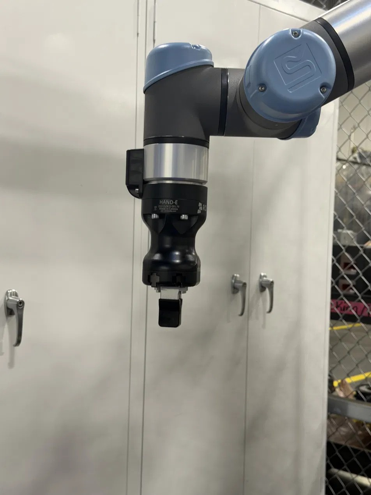
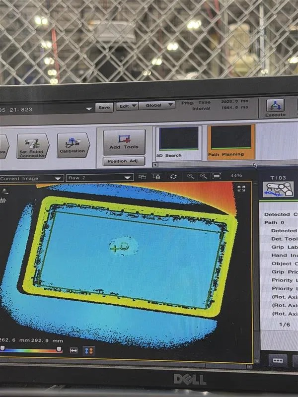
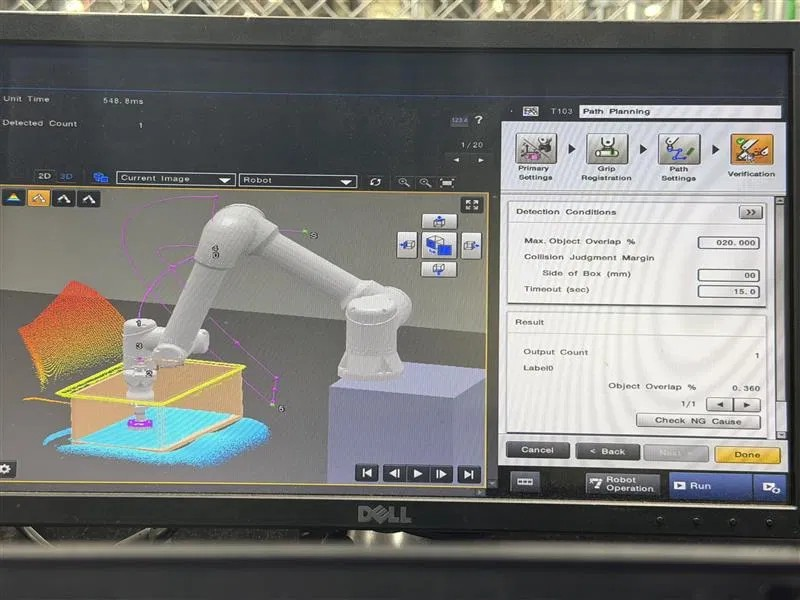

Review part geometry, define machining strategy, and design workholding.
Production Engineering · DFM · CAM · Qualification · Automation
Rochester Sensors
Worked across the product lifecycle, from CNC process development and design-for-manufacturability review of R&D prototypes to workholding, design troubleshooting, environmental qualification, and vision-guided robotic automation.
Mechanical Engineering Intern · Rochester Sensors, an Amphenol company · May 2026–Present · Dallas, TX

70–80%Cycle-time reduction
10+Production parts programmed
50-yrField life demonstrated
15–30/minRobotic bin-pick rate
01
My role in the lifecycle
Rochester builds liquid-level and pressure sensing systems for industrial and vehicle applications. My work connects engineering intent to repeatable production, verifies that the finished assembly survives its field environment, and automates the manual stations feeding it.
Simulate toolpaths, verify stock removal, and run the process on the machine.
Use design troubleshooting and environmental tests to validate the finished product.
02
Cycle-time optimization
I programmed CNC machining workflows in CamWorks for 10+ production parts along with dedicated multi-part fixtures, replacing inherited pattern-projected toolpaths that were leaving significant time on the table. Every change had to hold the GD&T requirements already released on the drawing.
Rebuilt the toolpaths
Replaced pattern-projected operations with strategies chosen around the actual part geometry and production volume.
Gouge + stock checks
Verified motion and remaining material before running anything on production equipment.
Drawing compliance
Confirmed the faster workflow still met every dimensional and geometric requirement.
70–80% faster
Cycle times dropped across the board, with the highest-volume part falling from 182 minutes to 34, all while holding full GD&T compliance.
03
Design for manufacturability
A large part of my job is sitting between R&D and the shop floor. Engineers bring me a prototype part or a prototype housing and I work out the toolpaths and the process to actually make it, which means I see every design decision from the side of the machine that has to cut it. That vantage point has taught me more about manufacturability than any course could.
Geometry that earns its keep
Features often survive into a released model because nothing forced anyone to justify them. I flag geometry that adds machining time or an extra setup without doing anything the part needs.
Deep, narrow, and unnecessary
Small deep crevices and divots are the usual offender. They force a long-reach, small-diameter tool that has to run slow and light to avoid deflection and chatter, and those are exactly the tools that snap. A pocket a few millimetres narrower can multiply cycle time and scrap a cutter mid-run.
Small changes, large savings
Opening an internal radius, easing a depth, or deleting a feature nobody needs is usually free to the designer and expensive to skip. Most of the cost is decided before the model is released.
It changed how I design
Having been the person who has to cut someone else's part, I now design with the process in view from the first sketch: how the stock is held, which tool reaches which feature, where a radius should be relaxed, and how many setups the shape implies. Manufacturability is not only cost and structural integrity. It is whether the part can be made repeatably, at rate, without destroying tooling to get there.
04
Fixtures and repeatability
A toolpath is only useful if every blank enters the machine in a known position. I designed and evaluated workholding that supports repeatable multi-part production.


05
Design troubleshooting
On in-development products I worked tolerance stack-up and assembly fit defects in SolidWorks. Rather than trusting the model alone, I validated each fix by machining prototypes to the released dimensions and checking how they actually went together.
Tolerance stack-up
Traced fit problems back through the dimension chain to find what was actually driving the interference.
Machined prototypes
Cut parts to the released drawing so the assembly could be checked in hardware, not just on screen.
Caught before production
Found and fixed a misalignment in the source design ahead of mass production.
06
Environmental qualification
The same assemblies optimized for production must survive fuel-tank and vehicle environments. I ran accelerated qualification testing on sensor assemblies for pre-launch client products across three failure modes.
−40 to +125 °C cycling
Accelerated temperature cycling to expose material, seal, and interface weaknesses.
Salt exposure
Evaluated protection against corrosive exposure and potential ingress paths.
Vibration
Validated durability under the repeated loading expected in vehicle service.
50-year field life
Testing demonstrated reliability beyond a 50-year equivalent field life against a 30-year design requirement, clearing the assemblies ahead of client launch.
07
Vision-guided automation
Bulk bins of randomly oriented parts were still being sorted by hand. I programmed a Universal Robots cobot with a Robotiq Hand-E gripper and Keyence 3D vision to reach into a tote and pick parts at whatever angle they landed, at 15 to 30 parts per minute. It is the first station of a phased plan to redeploy operator hours.



Full write-up
How the vision system finds a pickable part in a pile, how the path is proven before the arm moves, and which acceptance thresholds decide whether the cell runs unattended. Read the bin-picking deep dive →